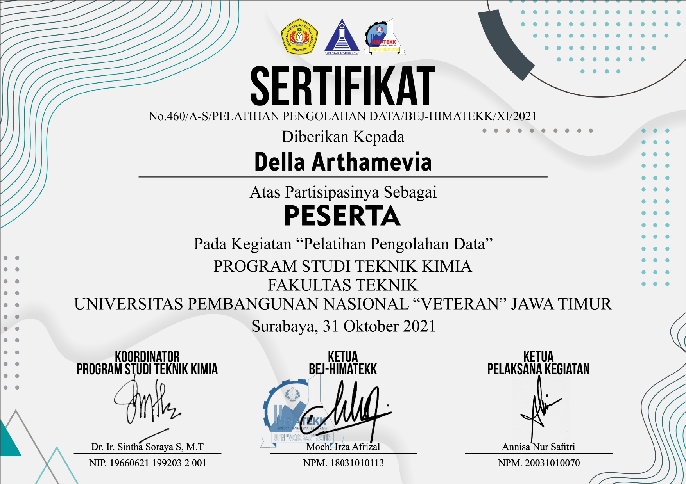
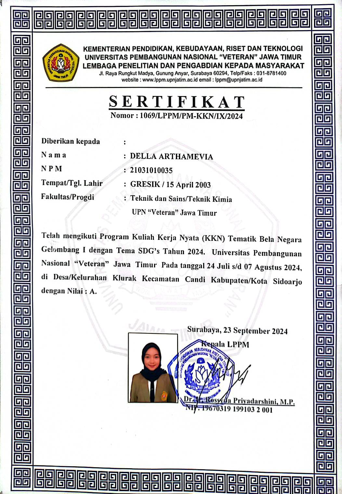
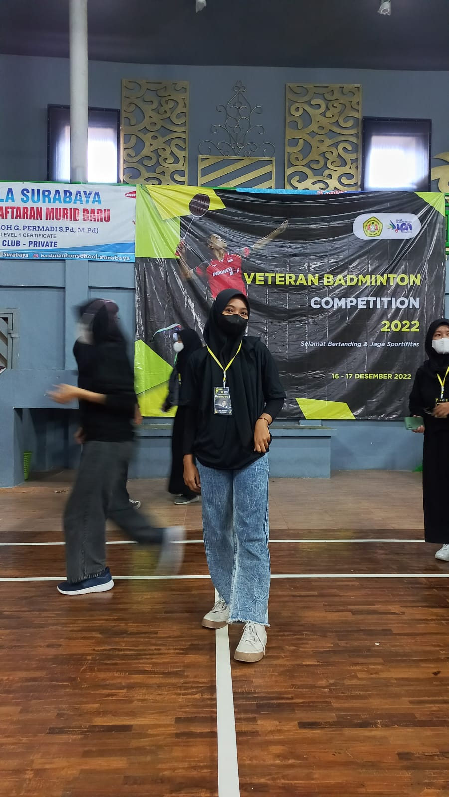

Portfolio Edition
Loading Editorial Canvas...
Headline / Peran Utama
Chemical Engineering Graduate | Environmental Document Specialist | Certified Ahli K3 Madya BNSP | Digital Content Creator
Nama Lengkap & Gelar
Della Arthamevia, S.T.

Lulusan S1 Teknik Kimia UPN "Veteran" Jawa Timur (IPK 3,80) yang berpengalaman dalam penyusunan dokumen lingkungan (UKL-UPL & Pertek BMAL), evaluasi proses industri, serta pengelolaan konten kreatif digital.

Halo, saya Della Arthamevia, lulusan S1 Teknik Kimia dari UPN 'Veteran' Jawa Timur dengan predikat Sangat Memuaskan (IPK 3,80/4,00). Selama masa studi, saya juga aktif dalam riset akademik dan berhasil mempublikasikan artikel ilmiah pada jurnal Serambi Engineering yang terindeks SINTA 4 (2026). Saya juga mengikuti program PKKM Studi Independen (Agustus 2023 – Desember 2023) di perusahaan konsultan lingkungan.
Saya memiliki ketertarikan dan pengalaman kuat di bidang teknik lingkungan dan proses industri, terbukti dari keterlibatan saya dalam penyusunan dokumen Pertek BMAL untuk berbagai perusahaan, penyusunan dokumen UKL-UPL, serta evaluasi unit produksi di industri gula nasional. Selain memiliki sertifikasi Ahli K3 Madya dari BNSP, saya juga menguasai produksi konten digital dengan jangkauan puluhan ribu audiens. Saya adalah pribadi yang analitis, sistematis, mudah beradaptasi, dan siap memberikan kontribusi terbaik di dalam tim.
Arahkan kursor untuk pratinjau visual dan klik baris proyek untuk membuka galeri berkas & studi kasus mendalam.
Spektrum keahlian teknis teknik kimia dan lingkungan, kemahiran aplikasi digital, penguasaan bahasa, serta karakter personal pendukung kerja profesional.
[KLIK GAMBAR UNTUK MEMBESARKAN LIGHTBOX]


Badan Nasional Sertifikasi Profesi (BNSP)
2 Halaman (Sertifikat & 20 Unit Kompetensi)

UPN Veteran Jawa Timur
Program Studi Teknik Kimia

Empowering Muslimah
Byendara x Empowering Muslimah
[KOLASE DOKUMENTASI KEGIATAN & PENGESAHAN]


Kuliah Kerja Nyata (KKN) Desa Klurak, Sidoarjo
Mengelola administrasi, surat-menyurat, dan laporan pertanggungjawaban program kerja KKN di Desa Klurak.

Mahasiswa Al-Muhandis
Mengelola publikasi informasi dan media komunikasi organisasi mahasiswa.


UKM Badminton UPN "Veteran" Jawa Timur
Aktif dalam kegiatan latihan rutin dan pengembangan minat bakat olahraga kampus.